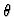
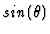
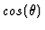

Abstract.
To solve symbolically the inverse kinematic problem usually requires to compute the roots of the so-called sine-cosine polynomials. A functional decomposition of a sine-cosine polynomial equation f(s,c)=0 reduces this task to the solution of two equations of degree less or equal than half the degree of f(s,c). Methods for simplifying the symbolic solution of kinematics problems through functional decomposition were initiated by G. Hommel and P. Kovacs, well documented with applications in the recent book of the latter author. They addressed the problem of simplifying the characteristic equation f(s,c)=0 for a revolute joint variable

( s and c stand for
and
), whose solution provides the possible value(s) of the joint angle in a robot manipulator for each given position of the end effector. The sine-cosine polynomial decomposition problem can be sated as follows:given a sine-cosine characteristic equation f(s,c) for a revolute joint variable , we want to know if there exist a univariate polynomial g(x) and a sine-cosine polynomial h(s,c) with deg(NF(h(s,c)) < deg(NF(h(s,c)) such that:
It is very easy to see that if a sine-cosine polynomial f(s,c) is decomposable, then the f(t) associated univariate polynomial has a bivariate homogeneous decomposition, but not conversely. Nevertheless there is a serious limitation for efficient robotic applications to t-polynomials of degree bigger than six, because the BHD algorithm requires factorization procedures over algebraic extensions of the field K(t).
In this talk, we present the implementation of the the method by GutierrezRecio(1997) for decomposing sine-cosine equations with numerical or parametric coefficients. The algorithm is in polynomial time. Factoring is not required in the algorithm, but rather it just need finding one root in the field K of a certain polynomial p(Z) in K[Z]. The implementation on MAPLE V, allowing decomposition over the rationals, algebraic extension of the rationals or parametric coefficient fields. The perfomance of the algorithm allows decomposing, almost instantaneously, sine-cosine polynomials of degree 16 with a Power Macintosh 9600/350.
Gathen, J.Weiss, J.:Homogeneous bivariate decompositions. Preprint, Dep. of Computer Science, University of Toronto, 1993.
Gutierrez, J.Recio, T.:Advances on the Simplification of Sine-Cosine Equations. To appear, J of Symbolic Computation, 40 pages, 1997. Preprint, Dep. of Computer Science, University of Toronto, 1993.
Kovács, P.Hommel, G.:Simplification of Symbolic Inverse Kinematic Transformations through Functional Decomposition. Adv. in Robotics. Ferrara, Sept. 1992.
Kovács, P.Rechnergestutzte symbolische Roboterkinematik. Vieweg Verlag, Wiesbaden (1993).
Smith, D.Lipkin, H.: A summary of the Theory and Application of the conics method in robot Kinemataic. 2nd. Intl. Conf. on Adv. in Robot Kinmetics. Linz (1990)- Springer- Verlag, pp. 81-88 (1991).